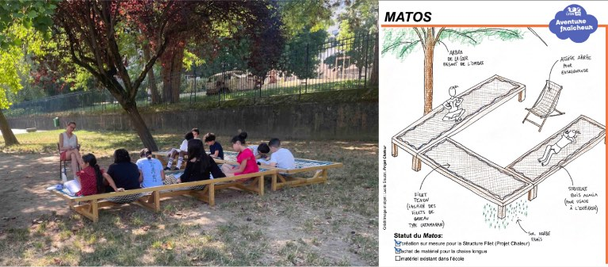

Co-construire des solutions
Enseignants, élèves, agents et direction participent dès la visite aux arbitrages. Des solutions en adéquation avec les besoins réels des usagers sont des solutions utilisées et donc opérantes.
Design organo-climatique Ingénierie low-tech

NOTRE OFFRE ÉCOLE
Pour aimer l’école même quand il fait (trop) chaud !
Nous accompagnons les communes et les équipes éducatives pour adapter leurs écoles à la chaleur, en partant de celles et ceux qui les vivent au quotidien.
En quelques semaines, nous observons avec les usagers comment la chaleur est vécue dans l'école, nous identifions ensemble les solutions possibles, puis nous les traduisons en un plan d'action fraîcheur (PAF) partagé par l'école et la commune.
Changement de rythme et de pratique, équipements bien choisis, objets conçus sur mesure, nouveaux gestes : des solutions low-tech, prêtes avant l'été, pour que l'école reste un lieu où l'on apprend et où l'on se sent bien, même quand il fait chaud.
Enseignants, élèves, agents et direction participent dès la visite aux arbitrages. Des solutions en adéquation avec les besoins réels des usagers sont des solutions utilisées et donc opérantes.
Des équipements légers, des systèmes low-tech et passifs, des changements de pratiques, mobilisables dès l'été suivant. Une adaptation ajustée aux contraintes des collectivités.
Les aménagements participent à la création de nouveaux rituels. Nous vous aidons à outiller ces changements de pratique pour que l'école reste une expérience apprenante et agréable toute l'année.
Vous choisissez, à partir d'un socle commun, les phases et les options qui vous conviennent. Un investissement ajusté aux besoins réels des usagers de l'école, pas plus, pas moins.
Le plan d'action fraîcheur (PAF) est un document qui traduit la stratégie collective pour optimiser le confort du bâtiment avec les ressources humaines et matérielles existantes.
Chaque PAF est fait sur mesure car il dépend des ouvertures, de l’orientation et de la forme du bâtiment, des personnes disponibles, du quartier, etc. Le PAF rassemble, noir sur blanc, ce que chacun s'engage à faire pour que l'école reste vivable quand il fait chaud : les gestes du quotidien, l'organisation et l’entretien des équipements.
Le possible réel · Tous les freins pris au sérieux
Pour chaque ouverture, chaque lieu et chaque moment de la journée : que peut-on vraiment ouvrir, fermer, utiliser ? Le PAF part de ce que l'école peut réellement faire.
Les usages d'abord
Avant d'acheter, nous regardons comment mieux utiliser ce qui existe déjà : ouvrir quand l'air extérieur est plus frais, se protéger du soleil le jour, installer des rituels fraîcheur.
Usages et équipements décidés ensemble
Notre expertise thermique éclaire les choix, selon vos contraintes et votre budget. Puis chacun s'engage : qui fait quoi, et quand.
Il n’existe pas de solution unique contre la chaleur. Nous combinons plusieurs stratégies, choisies pour chaque école selon son bâtiment, ses usages et ses contraintes. Des principes éprouvés depuis 2021 dans nos recherches-actions : dans des logements, en prison puis à l’école.
Maîtriser les courants d'air
Ventiler les corps le jour avec des brasseurs d'air bien placés, et aérer les locaux la nuit, quand l'air extérieur est plus frais.
Créer et profiter des îlots de fraîcheur
Repérer les lieux frais de l'école et de ses abords, et y déplacer les activités aux heures chaudes.
Exploiter le refroidissement par évaporation
L'eau qui s'évapore absorbe la chaleur : des toiles et des objets humides rafraîchissent l'air autour des élèves.
Chasser les sources de chaleur et se prémunir du soleil
Fermer les protections solaires le jour, éteindre les appareils inutiles, ralentir les activités physiques aux heures chaudes.
Rafraîchir les corps
Dégager le corps, limiter les contacts, choisir des matières fraîches et respirantes : rafraîchir les personnes plutôt que le bâtiment.
Créer et outiller des rituels fraîcheur
Des gestes répétés chaque jour de chaleur (ouvrir, fermer, boire, se déplacer), soutenus par des outils simples, partagés par toute l'école et inscrits dans le PAF.
Thermoéduquer pour gagner en autonomie
Transmettre aux élèves et aux adultes les principes de la chaleur, pour que chacun sache agir par lui-même.

Collaboration avec la Ville de Lyon, le CEREMA et l'ALEC de Lyon. Expérimentation de dispositifs d'adaptation organo-climatique créés sur mesure par l'équipe du Projet Chaleur, en étroite collaboration avec le personnel de l'école, les familles et les enfants, dans l'établissement scolaire Jean Zay à Lyon dans le cadre du projet Aventure Fraîcheur.
Objectif : Outiller les changements de pratiques pour faire de la chaleur un sujet d'apprentissage et d'action collective.
Été 2026
Le confort thermique à l'ère de l'Anthropocène, recherche-action auprès d'habitants · Clunisois/Paris · Leroy Merlin Source
2021-2024
Chauds ? Les tutos du Projet Chaleur, pédagogie populaire et création de communs · Roubaix · Interreg Vivons Lowtech Leven, Ville de Roubaix
2026
Supporter la chaleur en milieu pénitentiaire, recherche-action auprès de personnes détenues et d'agents pénitentiaires · Ministère de la Justice
2024-2025
Avoir chaud mais pas trop, exposition et colloque · Cluny · ADEME, Ville de Cluny, Communauté de communes du Clunisois
2026
Le Projet Chaleur est un collectif pluridisciplinaire qui conçoit des réponses low-tech, sensibles et créatives face aux aléas thermiques. Loin du réflexe des technologies énergivores, il développe des objets, des rituels et des stratégies d'Assistance à Maîtrise d'Usage (AMU) pour redonner aux corps et aux habitants le pouvoir d'agir sur leur confort, en été comme en hiver.
Vous pouvez également nous écrire à contact[at]projetchaleur.com